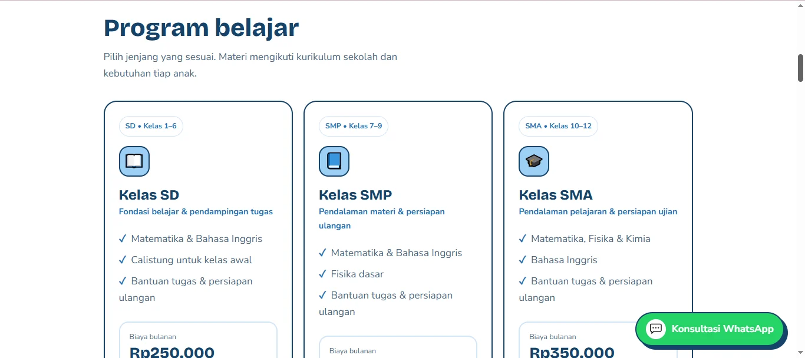
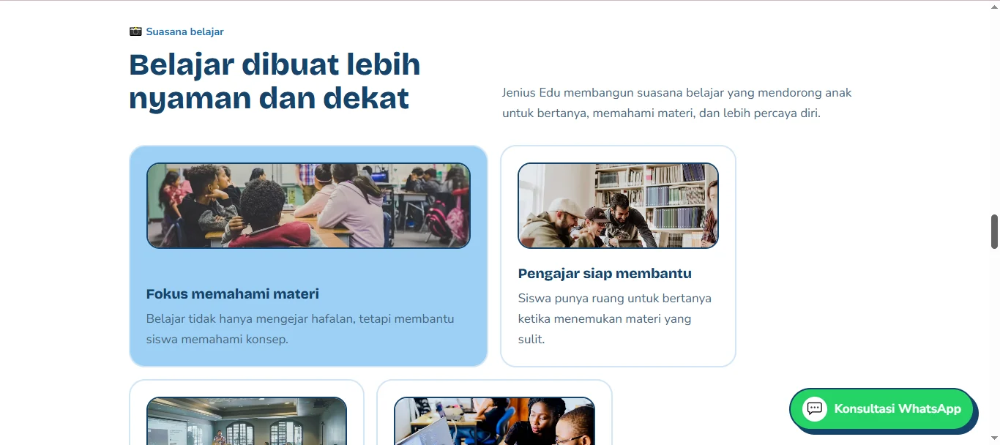
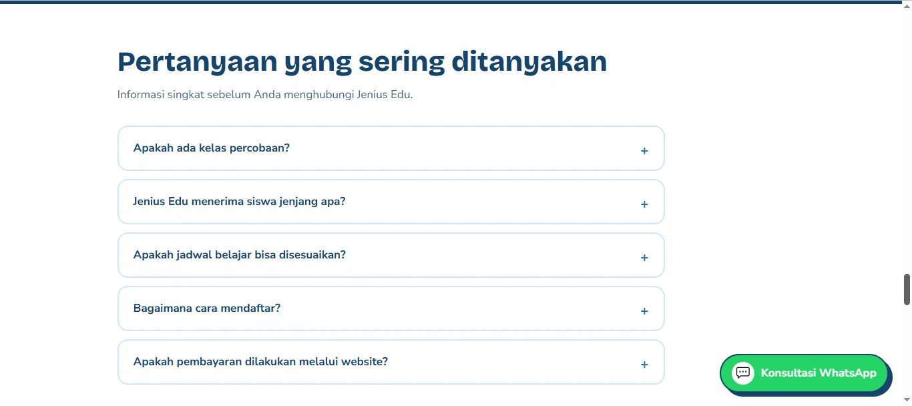
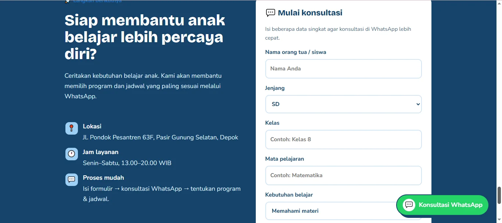

01 / EDUCATION WEBSITE
Jenius Education
Website Promosi Bimbingan Belajar
Membantu orang tua dan calon siswa mengenal layanan bimbingan belajar melalui pengalaman digital yang mudah diakses.
Kunjungi Website ↗JENIUS EDUCATION
Belajar lebih percaya diri.
Website informasi dan promosi bimbingan belajar.
Jelajahi program ↗
Ilustrasi konseptual — bukan screenshot atau data operasional asli.
01 / LATAR BELAKANG
Tantangan yang ingin diselesaikan.
Informasi program bimbingan belajar perlu disampaikan secara jelas agar orang tua dapat memahami layanan dan menghubungi penyelenggara tanpa proses yang rumit.
02 / PENDEKATAN
Solusi yang dikembangkan.
Landing page responsif dengan struktur informasi layanan, manfaat belajar, dan jalur komunikasi yang sederhana.
03 / FITUR UTAMA
Fitur dan kemampuan sistem.
01Halaman informasi program dan layanan
02Tampilan responsif untuk desktop dan smartphone
03Navigasi sederhana bagi orang tua dan calon siswa
04Akses menuju informasi pendaftaran dan kontak
04 / GALERI PROYEK
Dokumentasi antarmuka.
 Gambar belum tersedia. Unggah berkas ke folder assets/.
Gambar belum tersedia. Unggah berkas ke folder assets/.
Gambar belum tersedia. Unggah berkas ke folder assets/.
Gambar belum tersedia. Unggah berkas ke folder assets/.
Gambar belum tersedia. Unggah berkas ke folder assets/.
Gambar belum tersedia. Unggah berkas ke folder assets/.